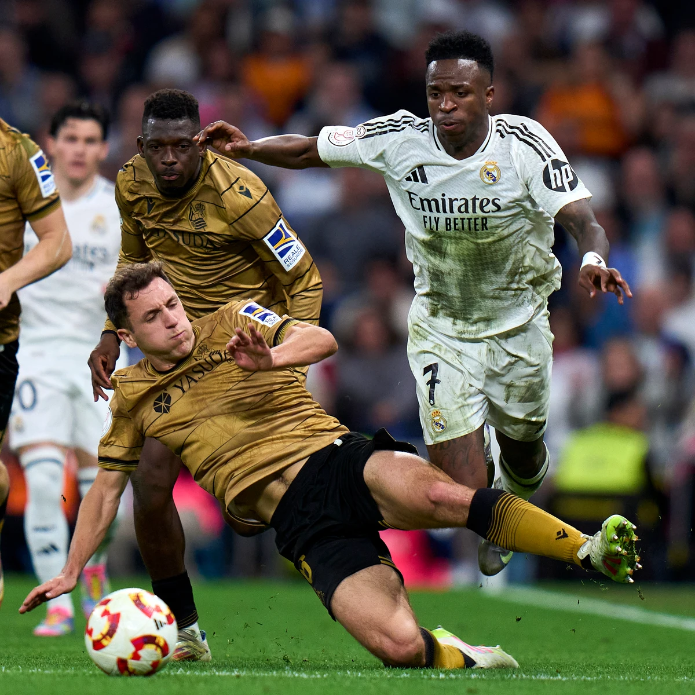
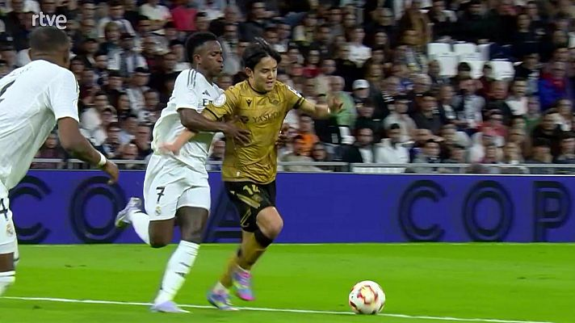

Resumen Blog: Real Madrid vs Real Sociedad - Copa del Rey 2025
Info Jugadores
Real Madrid
- Andriy Lunin: Mostró solidez a pesar de los goles recibidos.
- Vinícius Júnior: Participativo, generador de peligro constante y clave en dos asistencias.
- Jude Bellingham: Anotó un gol y aportó equilibrio en el mediocampo.
- Aurélien Tchouaméni: Dominante en el juego aéreo y autor del empate parcial 3-3.
- Antonio Rüdiger: Marcó el gol decisivo en la prórroga y lideró la defensa.
- Endrick: Anotó el primer gol con gran calidad técnica.
Real Sociedad
- Álex Remiro: Tuvo intervenciones clave, aunque recibió 4 goles.
- Mikel Oyarzabal: Figura del equipo con dos goles importantes.
- Pablo Marín: Protagonista en la creación de jugadas y asistencias.
Sanciones
En el reciente partido entre el Real Madrid y la Real Sociedad, se presentaron varias jugadas polémicas que generaron discusiones sobre posibles sanciones y amonestaciones:
- Posible penalti no sancionado a favor del Real Madrid: En el minuto 48, Jude Bellingham recibió un golpe en el rostro por parte del portero Álex Remiro. El árbitro no señaló penalti ni el VAR intervino. Ver más

- Entrada de Jon Olasagasti a Vinícius Júnior: Durante la prórroga, Olasagasti realizó una entrada fuerte sobre Vinícius Júnior que fue sancionada con tarjeta amarilla. Algunos consideraron que la acción merecía una tarjeta roja, pero el árbitro mantuvo su decisión inicial. Ver más

- Reclamación de penalti por parte de la Real Sociedad: La Real Sociedad solicitó un penalti por un supuesto agarrón de Vinícius Júnior a Takefusa Kubo. El árbitro no concedió la pena máxima, decisión que fue respaldada por Iturralde González, quien opinó que Kubo se dejó caer. Ver más

Plantilla
Real Madrid - XI inicial
- Portero: Andriy Lunin
- Defensas: Dani Carvajal, Antonio Rüdiger, David Alaba, Fran García
- Centrocampistas: Aurélien Tchouaméni, Jude Bellingham, Eduardo Camavinga
- Delanteros: Vinícius Júnior, Endrick, Rodrygo
Real Sociedad - XI inicial
- Portero: Álex Remiro
- Defensas: Hamari Traoré, Igor Zubeldia, Robin Le Normand, Aihen Muñoz
- Centrocampistas: Brais Méndez, Jon Olasagasti, Mikel Merino
- Delanteros: Pablo Marín, Mikel Oyarzabal, Takefusa Kubo
Datos del Partido
Último partido: Real Madrid vs. Real Sociedad
El 1 de abril de 2025, el Real Madrid empató 4-4 contra la Real Sociedad en el partido de vuelta de las semifinales de la Copa del Rey, asegurando su pase a la final con un global de 5-4. Los goles del Real Madrid fueron anotados por Endrick, Jude Bellingham, Aurélien Tchouaméni y Antonio Rüdiger.
Resumen del Partido
Goles
- Ander Barrenetxea (Real Sociedad): Aproximadamente al minuto 15, Barrenetxea abrió el marcador al recibir un pase filtrado de Pablo Marín y definir con un disparo entre las piernas del portero Andriy Lunin.
- Endrick (Real Madrid): Alrededor del minuto 30, Vinícius Júnior realizó un pase con el exterior de su pie, habilitando a Endrick, quien superó al portero Álex Remiro con una vaselina, igualando el marcador 1-1.
- Autogol de David Alaba (Real Sociedad): Cerca del minuto 60, Pablo Marín envió un centro que, desafortunadamente para el Real Madrid, rebotó en el talón de David Alaba, desviando el balón hacia su propia portería y poniendo a la Real Sociedad en ventaja 2-1.
- Mikel Oyarzabal (Real Sociedad): Poco después, Oyarzabal aumentó la ventaja para la Real Sociedad con un disparo que, tras desviar en Alaba, terminó en el fondo de la red, estableciendo el 3-1.
- Jude Bellingham (Real Madrid): Inmediatamente después, Vinícius Júnior desbordó por la banda y asistió a Bellingham, quien definió desde el centro del área para reducir la desventaja a 3-2.
- Aurélien Tchouaméni (Real Madrid): Minutos más tarde, Tchouaméni empató el partido 3-3 con un cabezazo tras un centro preciso, aunque el portero Remiro tuvo una reacción tardía.
- Mikel Oyarzabal (Real Sociedad): En tiempo de descuento, Oyarzabal volvió a adelantar a la Real Sociedad 4-3 con un cabezazo certero tras un tiro libre ejecutado por Sergio Gómez.
- Antonio Rüdiger (Real Madrid): Durante la prórroga, Rüdiger aseguró el empate 4-4 definitivo y el pase a la final para el Real Madrid al conectar un cabezazo potente tras un saque de esquina.
Estadísticas
- Posesión: Real Madrid 57% – 43% Real Sociedad
- Tiros a puerta: Real Madrid 9 – 7 Real Sociedad
- Faltas cometidas: Real Madrid 12 – 15 Real Sociedad
- Córners: Real Madrid 6 – 5 Real Sociedad
- Tarjetas amarillas: Real Madrid 2 – 3 Real Sociedad
- Tarjetas rojas: 0
- Pases completados: Real Madrid 502 – 384 Real Sociedad
Partidos Ganados
Vuelta de semifinales: Real Madrid 4 - 4 Real Sociedad (global 5-4, victoria para el Madrid). Clasificación: Gracias al gol de visitante en la ida, el Madrid remontó en casa y selló el pase.
Fechas
- Ida semifinal: 12 de marzo de 2025
- Vuelta semifinal: 1 de abril de 2025
- Final de la Copa del Rey: 15 de mayo de 2025
Cronograma de Partidos
| Fecha | Partido | Competición | Estadio |
|---|
| 01/04/2025 | Real Madrid vs. Real Sociedad (4-4) | Copa del Rey (SF) | Santiago Bernabéu |
| 07/04/2025 | Real Madrid vs. Villarreal | LaLiga | Santiago Bernabéu |
| 10/04/2025 | Chelsea vs. Real Madrid | Champions League | Stamford Bridge |
| 15/05/2025 | Real Madrid vs. FC Barcelona | Copa del Rey (Final) | La Cartuja, Sevilla |
Registros
- Endrick: Se convierte en el jugador más joven del Real Madrid en marcar en una semifinal de Copa del Rey (18 años).
- Bellingham: Primer centrocampista inglés en marcar en una semifinal de Copa del Rey desde Steve McManaman en 2002.
- Rüdiger: Anotó su primer gol en tiempo extra desde su llegada al club.
Momentos Destacados del Partido
Polémicas arbitrales del partido: Ver video
Resumen de goles: Ver video
Frases Importantes de la Entrevista
Endrick: "Este gol es un sueño hecho realidad."
Bellingham: "Estamos muy contentos con la remontada, el equipo lo merecía."
Rüdiger: "Nunca dejamos de pelear, por eso conseguimos la victoria."